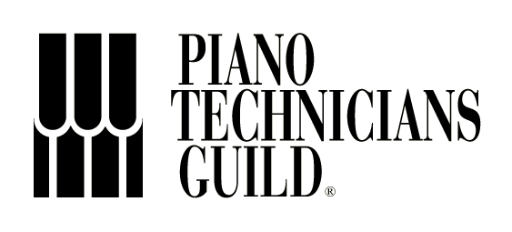

Piano tuning and repair services for New Hampshire and Mass
Brad Smith
603.494.4147
brad@smithpiano.com
Registered Piano Technician (RPT)



Concert tuning for the top concert halls and recording studios in the Boston area since 1985. Concert tuning for The Boston Pops, Cleveland Symphony, Luciano Pavarotti, Doc Severensen, Natalie Cole and Diana Ross. Extensive concert tuning experience during the 80's and 90's for popular artists such as Billy Joel, Elton John, Frank Sinatra, Keith Emerson, Ray Charles, Diana Ross, Wynton Marsalis Group and Chick Corea.
CURRENT WORK EXPERIENCE
Since 1992, I have built and maintain a large private tuning clientele in Southern New Hampshire and Northern Mass. Concert experience includes work for artists such as Menahem Pressler, Christopher Taylor, Andre' Watts and Sarah McLachlan. Currently serving over 1500 in-home clients throughout New England
WORK EXPERIENCE 1980 - 1992
Professional piano technician since 1981 Warranty work for Yamaha, Kawai, Steinway, Mason & Hamlin since 1985 Concert and maintenance technician at Berklee College of Music, Boston, MA 1981-1992 Duties included: -Concert maintenance of Berklee Performance Center and other performance venues at the college. -Trained, supervised and managed staff piano technicians at various skill levels -Recorded and tracked maintenance work, organized and maintained inventory of parts/tools/supplies -Built relationships within the college community to facilitate maintenance within tight scheduling demands -Created priority-based methods for rough tuning, fine tuning and servicing within college schedule constraints.
REBUILDING, REGULATION, TUNING AND VOICING SKILLS
Tuning as many as 1200 pianos per year, my specialty is concert regulation, tuning and tone voicing. Aural tuning is my preference. In 2006 I completed renovations on a 3000 sq ft. piano rebuilding & refinishing shop in Bedford, NH providing complete rebuilding and refinishing services, specializing in Steinway restoration In March of 2007 I replaced hammers/shanks/flanges on the concert Steinway D for St. Paul's School in Concord, NH in preparation for an April 12th concert by artist, Christopher Taylor. Mr. Taylor played a challenging program, including all of the Chopin Etudes. We worked together to voice the piano as evenly as possible, including full shift voicing and half-shift voicing, for maximum dynamic possibilities. As an active rebuilder with PTG, I keep abreast of the latest tools and methods for the myriad tasks involved in rebuilding a piano. I maintain an extensive array of tools, jigs, machines and fixtures devoted to the highest possible quality rebuilding
TECHNICAL TRAINING
Apprentice to Tom Sheehan, Berklee College of Music, Boston, 1980-82 B.A. Degree Piano Performance, Berklee College of Music, Boston, MA , 1985 Graduate of Yamaha's Little Red Schoolhouse, grand piano regulation, 1992 Factory authorized service training, Yamaha Disklavier pianos, 1993 Factory authorized service training, Piano Disc installation & service, 1993 Yamaha Disklavier authorized service training, 2003 Yamaha Performance Piano regulation training 2003 Geneva International, Petrof WorkSmart grand piano regulation and voicing training 2004 Ongoing Steinway training at all PTG sponsored events, covering official Steinway methods & procedures for tuning, regulation & voicing of concert instruments.
AFFILIATIONS, PIANO TECHNICIANS GUILD
Piano Technicians Guild continuing education since 1979 Active member of PTG, passed all RPT exams in 1990, aural tuning only Retook RPT tests in 2004 and 2014, passing at examiner level, aural tuning only Currently offer a business class for PTG at selected regional seminars Active member of the Boston Chapter PTG
MUSICAL BACKGROUND
Working pianist since 1975 Instructor, Jazz Piano & Improvisation, Northwestern Michigan College 1982-84 Music therapy with blind & autistic children, Mass Assoc. for the Blind 1984-86 Private instructor, jazz & classical piano since 1975 Private study with Charlie Banacos, jazz piano and improvisation Private study with Cathy Rand, Boston Conservatory, classical technique Extensive experience as solo pianist in wide variety of settings